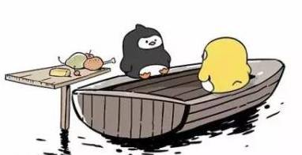
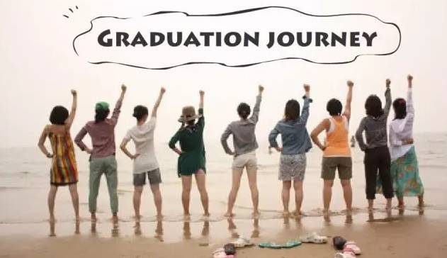

Time: 19:30-21:30, Friday,May 13.
Venue: Room B208, New Main Building, Beihang University.
Tender

Toastmaster: Gastby
A series of comics became the hot topics on the Internet--the tender of our friendship can flip immediately. Those pictures are really interesting and exaggerated through which we would judge our behaviors with friends if it is excessive and get some reflections. Actually the friendship is only a tip of the iceberg, you may encounter many situations where you want to overturn the tender or be overturned, in the interpersonal relationships with your love,colleagues, classmates and so on.
So what shall we deal with those situations? Come to our meeting this Friday and share your opinions with us.
Table topic master: Deron
About the theme – tender, a young, handsome and humorous doctor---Deron has prepared some questions for all of us, including the members and all the guests, welcome all the guests to join our table topic sections.
Competent Communication Projects (CC)

My graduation trip (CC-1)
Speaker: Yolanda
Every year at this time, there comes the graduation, before the farewell with your university, or before you enter your next station of life, how about a graduation trip? Here comes Yolanda, a beautiful and gentle girl with her beautiful memories in the graduation trip, it is Yolanda’s first show, so come to our meeting and listen to her story, let’s see what surprise can Yolanda bring to us~
Basketball and my life
Speaker: Eric
A handsome and strong boy –Eric bring his first speech, he join us not long before, but he is so energetic, and that’s why he choose to firstly tell us the story between him and the basketball, it must be true love, looking forward to Eric’s story.
Luck and perspiration (CC-2)
Speaker: Cicily
Three weeks ago, a girl took away the best in both table topic and prepared speeches, this Friday, she comes back---she is Cicily, her first speech was gorgeous which still haunt in my head, and this time, she is going to share her comprehension about luck and perspirations, maybe she got some different ideas from Edison’s motto.
So let’s wait for Cicily’s speech.
What is Toastmasters?
Toastmasters International (TI) is a nonprofit educational organization that operates clubs worldwide for the purpose of helping members improve their communication, public speaking, and leadership skills.
You can find us by the following map of Beihang University.

https://mp.weixin.qq.com/s/iXpKDItPXqwH_IAUDctgsg
本页为抢救式本地归档，图文已永久保存。